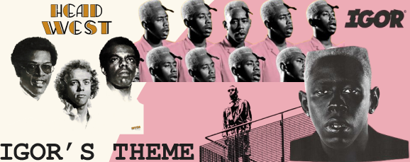

How I did it
I began with detailed planning and research, despite finding few similar projects due to my original idea. To visualize my concept, I created mood boards for four songs. After consulting a teacher, I focused on Tyler, the Creator's "IGOR’S THEME" due to time constraints. I used Figma to design the website, translating my vision into a functional design despite my developing coding skills.